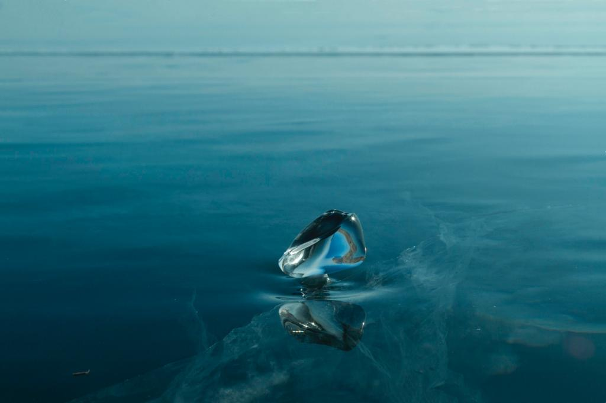

We run a travel company located at the foothills of the Great Himalayas. We take people through adventures in Sikkim & the hospitality of the North-East. We customise tours based pn your planning needs & requirements. A car is given at your disposal to go around places as per your choice & time. We try to make your experience a memorable one.
We make stories with you & you become our extended family member at the end of the tour carrying back with you loads of memories & hospitality from the various local households of this small region in the Eastern part of India. You get to relish the local food made in the household kitchens with vegetables grown in their small gardens, while watching folk dances & songs by the local people. You no more feel like a guest & they welcome you as part of the group.